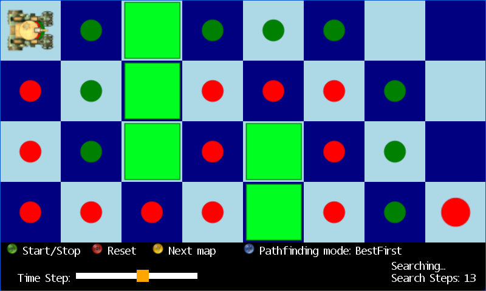

Pathfinding
Ported from Microsoft's XNA 4.0 Pathfinding sample.
Source for this sample on GitHub ↗

Play ▸Opens in a new tab. Press A to start the search.
About this sample
Breadth-first, best-first and A* search look for a route across four tile maps. Green dots mark nodes available to search; red dots mark nodes already visited. When a route is found, the tank follows its waypoints to the destination.
Controls
| Action | Keyboard | Gamepad |
|---|---|---|
| Start or stop searching | A | A |
| Reset the current map | B | B |
| Change search method | X | X |
| Next map | Y | Y |
| Adjust time step | Left / Right | D-pad Left / Right |